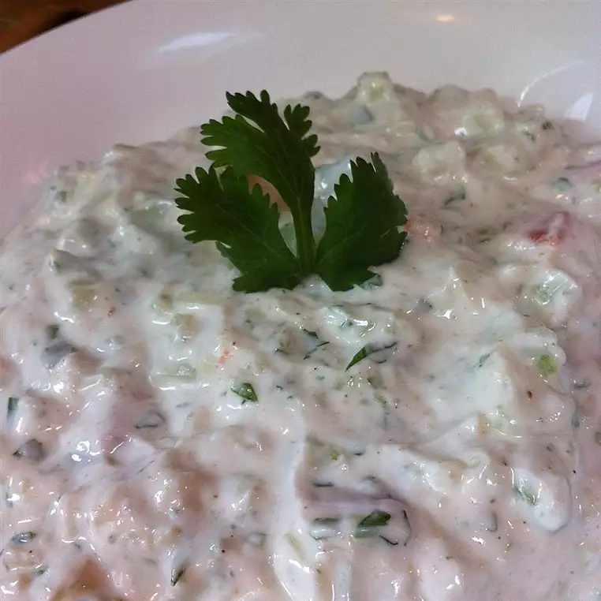

Raita

Description
Raita is a side dish in Indian cuisine made of dahi (yogurt, often referred to as curd) together with raw or cooked vegetables, more seldom fruit, or in the case of boondi raita, with fried droplets of batter made from besan (chickpea flour, generally labeled as Gram Flour).
Ingredients
- 1 cup plain yogurt
- 1 cup sour cream
- 3 cucumbers, seeded and chopped
- 1 tomato, seeded and chopped
- 1 teaspoon ground cumin
- ½ teaspoon paprika
- 4 cloves crushed garlic
- salt and pepper to taste
Steps
- In a salad bowl, whisk together the yogurt, sour cream, cumin, paprika and garlic.
- Add cucumbers and tomatoes; toss and chill before serving.